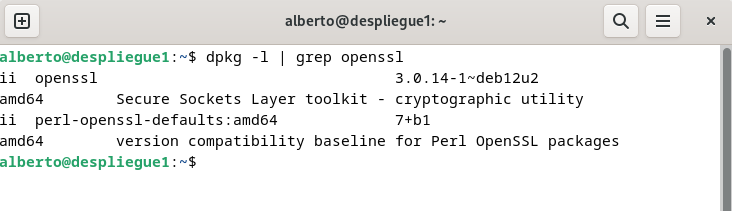
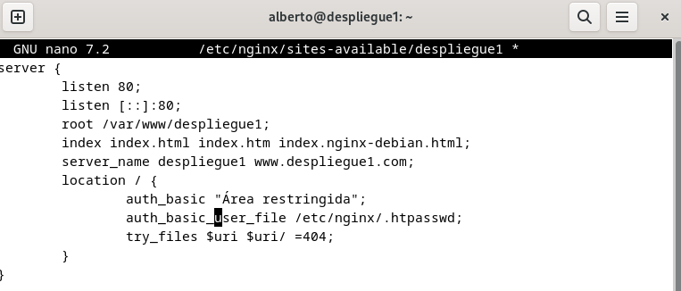
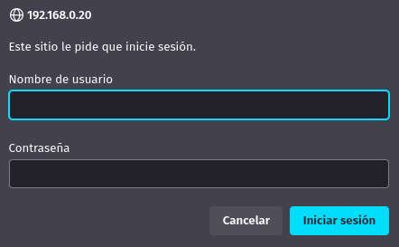
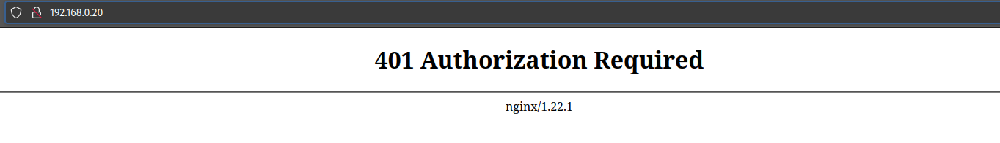
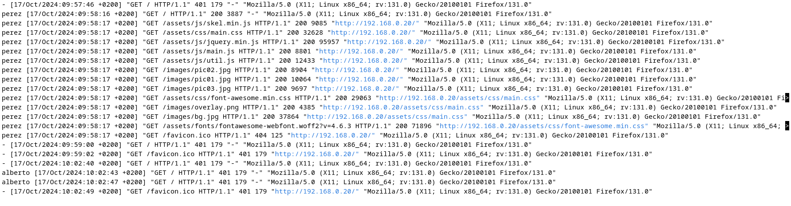
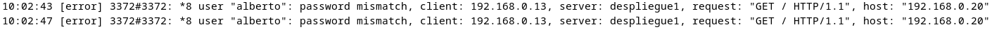
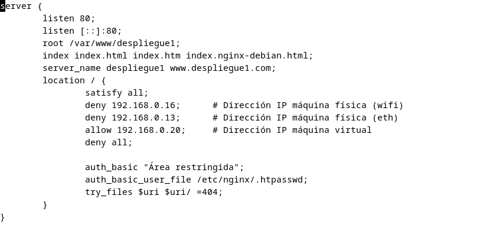
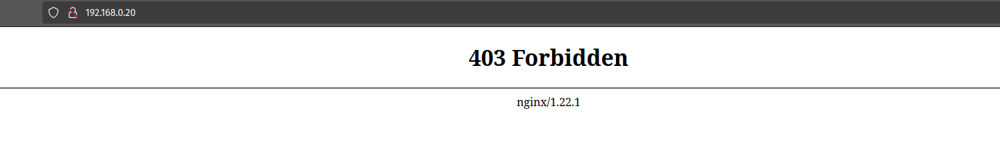
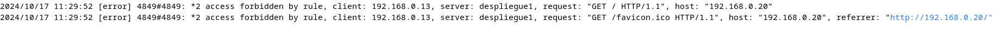

Práctica 2.2
Creación de usuarios y contraseñas para el acceso
Verificamos que tenemos openssl en la máquina:

Creamos un archivo para guardar usuarios y contraseñas llamado ".htpasswd" ejecutando:
sudo sh -c "echo -n 'alberto:' >> /etc/nginx/.htpasswd"
y también crearemos una contraseña cifrada ejecutando:
sudo sh -c "openssl passwd -apr1 >> /etc/nginx/.htpasswd
Voy a crear dos usuarios distintos y a leer el fichero para comprobar que el contenido es correcto:

Configuración para autenticación básica
Para configurar la autentificación de nuestro servidor, modificaremos el archivo /etc/nginx/sites-available/despliegue1 y añadiremos dos nuevas líneas dentro del apartado "location":

Reiniciamos el servicio y comprobamos que no hay ningún error con:
sudo systemctl restart nginx
sudo nginx -t
Ahora, si tratamos de entrar a la página desde el navegador, aparecerá el siguiente mensaje:

Si nos autentificamos correctamente, entraremos a la página sin problema.
En caso de que no indiquemos uno de los usuarios y contraseña que hemos creado anteriormente, no se nos permitirá el acceso a la página:

Podemos comprobar los registros de peticiones de entrada a la página en /var/log/nginx/access.log y /var/log/nginx/error.log (peticiones denegadas o erróneas):


Restricción de acceso por IP
A continuación, vamos a configurar una restricción de acceso para que sólo tengan acceso las IPs que indiquemos.
Para ello, volvemos a editar el archivo /etc/nginx/sites-available/despliegue1:

Desglosando las líneas añadidas:
-
La configuración "satisfy all" obliga a que cada dirección IP deba cumplir tanto la autentificación que configuramos anteriormente como que la solicitud provenga de una IP válida. Si en su lugar indicásemos "satisfy any", valdría con que sólo se cumpliera una de las dos condiciones.
-
Las líneas "deny 192.168.X.X" restringen el acceso de esas direcciones de manera específica. Como está activado "satisfy all", no se podrá acceder ni aunque se conozca un usuario y contraseña válidos. En este caso, he prohibido las direcciones IP que en mi red local se refieren a mi máquina física.
-
La línea "allow 192.168.X.X" permite el acceso de una IP en específico, aunque será necesario autentificarse para acceder a la página. En este caso, he permitido el acceso de la máquina virtual en la que se aloja el servidor.
-
La línea "deny all" indica que el resto de direcciones desde las que se solicite acceso tienen entrada prohibida a la página. Debe colocarse al final para que sea evaluada en último lugar y no prohíba el acceso de IPs que sí queremos que tengan acceso.
Tras guardar los cambios con la nueva configuración, compruebo desde mi máquina física que al intentar entrar a la página, se me prohíbe el acceso:

Y también se puede comprobar que efectivamente se ha prohibido el acceso a esta IP desde el archivo /var/log/nginx/error.log:

Cuestiones finales
Cuestión 1
Supongamos que yo soy el cliente con la IP 172.1.10.15 e intento acceder al directorio "web_muy_guay" de mi sitio web, equivocándome al poner el usuario y contraseña. ¿Podré acceder?¿Por qué?
location /web_muy_guay {
#...
satisfy all;
deny 172.1.10.6;
allow 172.1.10.15;
allow 172.1.3.14;
deny all;
auth_basic "Cuestión final 1";
auth_basic_user_file conf/htpasswd;
}
Por la directiva "satisfy all", el usuario tendrá que cumplir con todas las reglas de acceso; por una parte, lo tiene permitido por la directiva "allow 172.1.10.15", pero también está obligado a autenticarse según los credenciales almacenados en "conf/htpasswd".
Cuestión 2
Supongamos que yo soy el cliente con la IP 172.1.10.15 e intento acceder al directorio web_muy_guay de mi sitio web, introduciendo correctamente usuari y contraseña. ¿Podré acceder?¿Por qué?
location /web_muy_guay {
#...
satisfy all;
deny all;
deny 172.1.10.6;
allow 172.1.10.15;
allow 172.1.3.14;
auth_basic "Cuestión final 2: The revenge";
auth_basic_user_file conf/htpasswd;
}
En este caso, el usuario tampoco podrá acceder, ya que como la directiva "deny all" se evalúa antes que "allow 172.1.10.15" y que la directiva de autenticación, el servidor le denegará el acceso.
Cuestión 3
Supongamos que yo soy el cliente con la IP 172.1.10.15 e intento acceder al directorio web_muy_guay de mi sitio web, introduciendo correctamente usuario y contraseña. ¿Podré acceder?¿Por qué?
location /web_muy_guay {
#...
satisfy any;
deny 172.1.10.6;
deny 172.1.10.15;
allow 172.1.3.14;
auth_basic "Cuestión final 3: The final combat";
auth_basic_user_file conf/htpasswd;
}
Tampoco le será posible al usuario acceder, ya que se le está denegando el acceso explícitamente a su IP con la directiva "deny 172.1.10.15".
Cuestión 4
Supongamos que quiero restringir el acceso al directorio de proyectos porque es muy secreto, eso quiere decir añadir autenticación básica a la URL:Proyectos. Completa la configuración para conseguirlo:
server {
listen 80;
listen [::]:80;
root /var/www/freewebsitetemplates.com/preview/space-science;
index index.html index.htm index.nginx-debian.html;
server_name freewebsitetemplates.com www.freewebsitetemplates.com;
location {
try_files $uri $uri/ =404;
}
location /proyectos {
auth_basic "Cuestión final 3: The final combat";
auth_basic_user_file conf/htpasswd;
try_files $uri $uri/ =404;
}
}